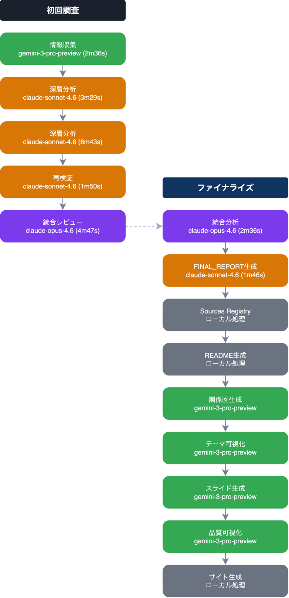

Research Findings: Nishihokima Area & 2019 Music Bar Trends 1. Regional Context: Nishihokima (西保木間) ...
この分析を読むStory Architecture Analysis（物語骨格分析）: ミュージックバーrope Narrative Framework（物語の骨格構造） ...
この分析を読むEpisode Reconstruction Architecture（エピソード再構成の演出プラン）: ミュージックバーrope Core Principle（基本原則）: 「内輪ネタ」を「普遍的神話」に変換する理論 ...
この分析を読む各ステップで使用されたAIモデルと処理の流れを可視化しています

claude-opus-4.6, claude-sonnet-4.6, gemini-3-pro-preview